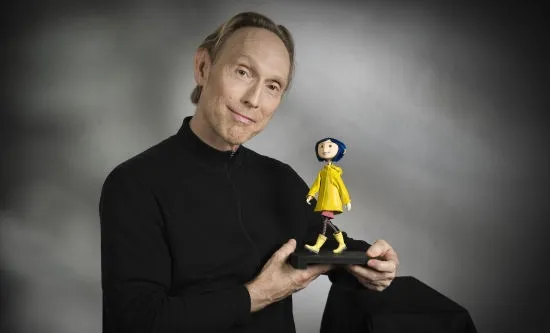

Henry Selick es un aclamado animador y director estadounidense especializado en stop-motion. Es un error común atribuirle la película a Tim Burton; aunque tienen un estilo gótico similar, Selick es el verdadero autor, conocido también por El extraño mundo de Jack.
Debutó en el cine como director en 1993 con la extraordinaria e intensa producción de "Pesadilla antes de Navidad" Siendo ya uno de los principales innovadores en el campo de la animación cuadro por cuadro y de sus formas alternas, Selick fue seleccionado por el propio Tim Burton para esta misión y se estableció como una importante fuerza creativa en la industria. Su imaginativa visión y su atención al detalle guiaron a la película a través de las diversas etapas de desarrollo y producción y fue también responsable en gran medida de reunir el talentoso equipo que realizó la película.
Además de su candidatura al Premio de la Academia por Mejores Efectos Especiales, la película hizo a Selick merecedor del Annie Award de A.S.I.F.A. Hollywood por Mejor Logro Directoral Individual, ganando a "The Lion King". Selick continuó luego de esta producción de más de tres años con una película de animación y acción real para "James and the Giant Peach" de Roald Dahl, la cual ganó el premio más importante en el Festival Internacional de Animación de Annecy en 1997. Luego dirigió "Monkeybone", una fantasía acerca de un caricaturista atrapado dentro de su propia creación. Selick, quien ha continuado explorando nuevos territorios en la realización de animación y fantasía, también creó secuencias animadas para "The Life Aquatic With Steve Zissou" de Wes Anderson. Actualmente está dirigiendo una película digital de animación cuadro por cuadro "Coraline", basada en su propia adaptación del libro para niños de Neil Gaiman de gran éxito editorial y ganador del Hugo Award.